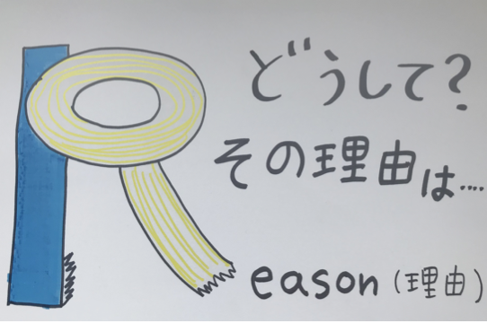
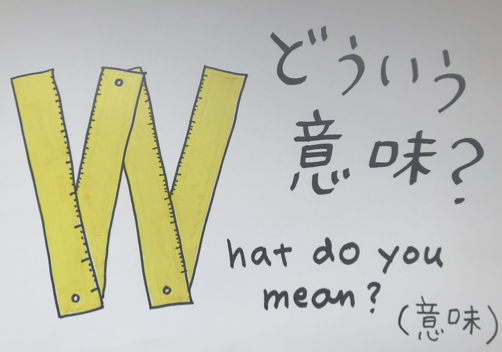
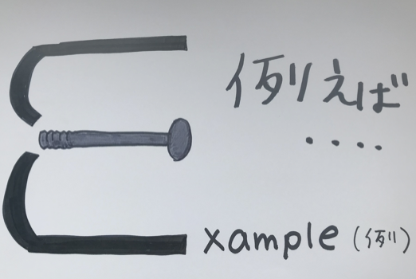
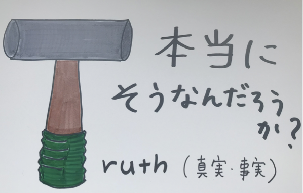
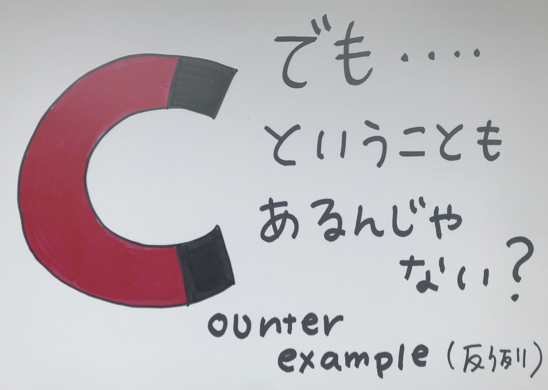
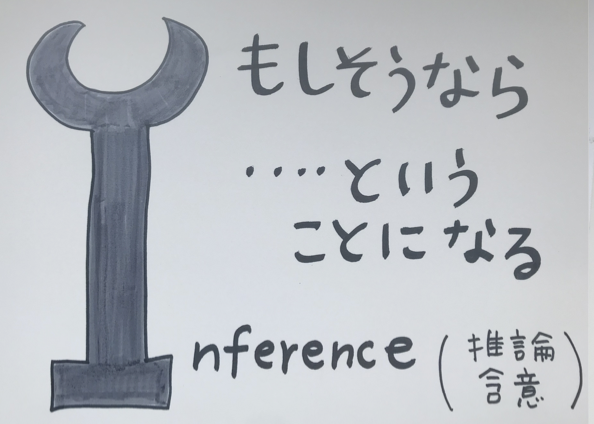
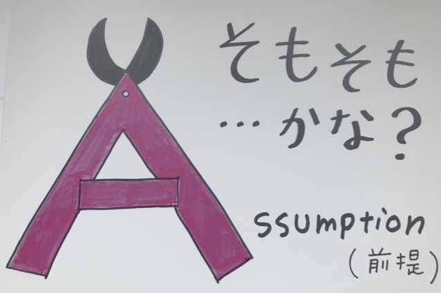

質問の型（Good Thinker's Toolkit）
Good Thinker's Toolkit
対話のなかで使ってみよう Good Thinker's Toolkit
対話の中では積極的に相手に質問することが大切です。ただし、対話における「質問」は相手についての事実や情報を知るためではなく、相手の発言をていねいに理解することや、その根本にある相手の「考え」（価値や前提、信念）を理解するためになされます。
例えば、第2回のワークの課題は、相手の研究テーマについて質問してみよう、ですが、その研究テーマについての一般的・学術的な情報を得るためではなく：
- ● その人はなぜそのことを研究しようと思ったのか？
- ● いつごろからそのことに興味をもったのか？ きっかけは？
- ● その根本にあるその人の問題関心や考えたいことは何か？
という、相手や研究テーマの根本にあるその人の関心や考えを（共感的に）理解するために質問をしてください。その時に役に立つのは、以下のような相手の「考え」にフォーカスを置いた質問です。第2回目だけでなく、今後のすべての対話型ワークにおいて、このような質問ができるように心がけてみてください。

Reason（理由）
「どうして？ その理由は……」
相手がそう考える理由や根拠を尋ねます。「なぜそう思うのですか？」「どうしてそう考えたのですか？」

What do you mean?（意味）
「どういう意味？」
相手の言葉の意味を明確にします。「それはどういう意味ですか？」「もう少し詳しく教えてください」

Example（例）
「例えば……」
具体的な例を求めます。「例えばどういうことですか？」「具体的にはどんな場面ですか？」

Truth（真実・事実）
「本当にそうなんだろうか？」
発言の真実性を問います。「それは本当にそうですか？」「確かめる方法はありますか？」

Counter example（反例）
「でも……ということもあるんじゃない？」
別の視点や反対の例を提示します。「でも、こういう場合はどうですか？」「逆のケースもありませんか？」

Inference（推論・含意）
「もしそうなら……ということになる」
相手の考えから導かれることを探ります。「もしそうだとしたら、〇〇ということになりますか？」

Assumption（前提）
「そもそも……かな？」
相手の考えの前提を問います。「そもそも〇〇という前提がありますが、それは正しいですか？」